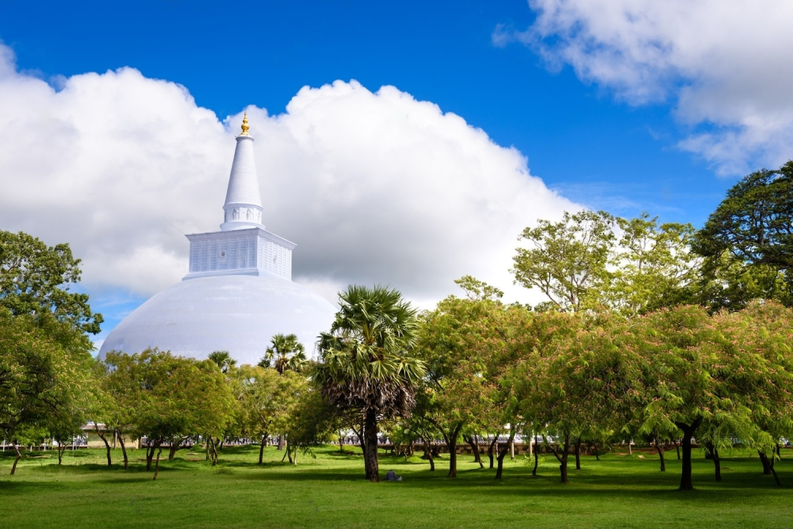
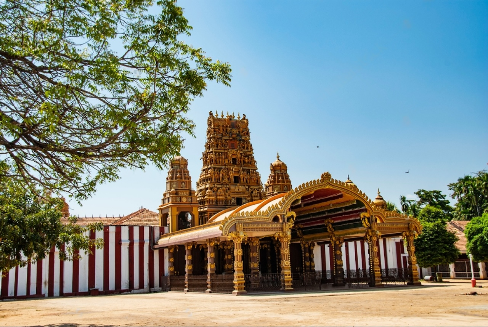

Anuradhapura

Anuradhapura, the ancient capital of Sri Lanka, beckons with its majestic ruins and spiritual resonance. Explore sprawling archaeological sites where towering dagobas and sacred relics whisper tales of a bygone era. Immerse yourself in the serenity of sacred Bodhi trees, and experience the timeless essence of Buddhism amidst the ruins of this historic city.
Jaffna

Jaffna, steeped in history and culture, offers a unique glimpse into Sri Lanka's northern heritage. Explore ancient temples adorned with intricate carvings and vibrant Hindu festivals that pulse with energy. Indulge in delectable Tamil cuisine, wander through bustling markets, and discover the resilience and warmth of the people in this captivating city.